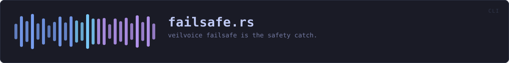

crates/veilvoice-cli/src/failsafe.rs
veilvoice-cli · 112 lines · read the source here · or on GitHub
veilvoice failsafe is the safety catch. What it can and cannot do.
In plain words
Shows whether the safety catch is on, what it would do, and what is holding a microphone right now. It is the same guard the desktop application runs; this is how to look at it from a terminal.
The limits are printed every time, because the one thing a reader must not come away believing is that this stops their computer handing a microphone to another program. It notices, and it acts, and there is a moment between the two.
WHAT THIS FILE CONTAINS
112 lines defining 3 functions (2 public), 0 types and 0 constants. Everything below is read out of the source, so it cannot disagree with the code.
What happens when it runs. These are the ways in: public, and nothing else in this file calls them, so they are what an outside caller reaches first.
showline 19 · Show what Failsafe would make of this machine right now.
reachesmicrophone_holdersdescribeline 110 · A named finding, for the tests to reach without a machine.
WHAT CALLS WHAT
The functions this file defines, and the calls between them. An edge means the callee's name appears, called, inside the caller's body. This is a syntactic reading, not a type-resolved one.
The same graph as Mermaid source
%%{init: {"theme":"base","themeVariables":{"background":"#1a1b26","primaryColor":"#1f2335","primaryTextColor":"#c0caf5","primaryBorderColor":"#7aa2f7","secondaryColor":"#16161e","tertiaryColor":"#16161e","lineColor":"#737aa2","textColor":"#c0caf5","mainBkg":"#1f2335","nodeBorder":"#7aa2f7","clusterBkg":"#16161e","clusterBorder":"#2f3549","fontFamily":"ui-monospace, SFMono-Regular, Consolas, monospace","fontSize":"14px"}}}%%
flowchart TD
n_show(["show<br/>line 19"])
n_microphone_holders["microphone_holders<br/>line 86"]
n_describe(["describe<br/>line 110"])
n_show --> n_microphone_holders
click n_show href "https://github.com/tilas01/veilvoice/blob/main/crates/veilvoice-cli/src/failsafe.rs#L19" "open the source"
click n_microphone_holders href "https://github.com/tilas01/veilvoice/blob/main/crates/veilvoice-cli/src/failsafe.rs#L86" "open the source"
click n_describe href "https://github.com/tilas01/veilvoice/blob/main/crates/veilvoice-cli/src/failsafe.rs#L110" "open the source"
classDef entry fill:#1f2335,stroke:#7aa2f7,color:#c0caf5
class n_show,n_describe entry
classDef helper fill:#1f2335,stroke:#bb9af7,color:#c0caf5
class n_microphone_holders helperThis site loads no third-party script, so it cannot run Mermaid; the diagram above is the same nodes and edges drawn by the generator instead. GitHub renders the source below directly.
ITEMS
| Item | Line | Documentation |
|---|---|---|
show pub fn | 19 | Show what Failsafe would make of this machine right now. |
microphone_holders fn | 86 | Everything holding a microphone, through the shared watch layer. |
describe pub fn | 110 | A named finding, for the tests to reach without a machine. |